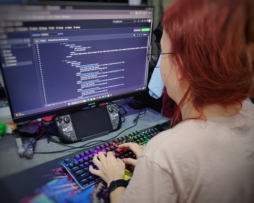
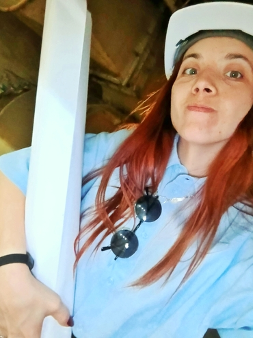
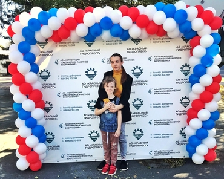
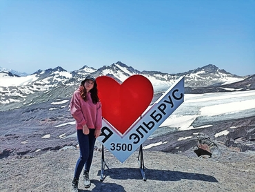
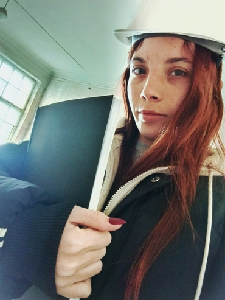
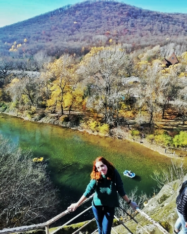

Привет, меня зовут - Надежда, я родилась 09 декабря 1999 года в городе Таганрог
Ростовской области, являюсь гражданкой Российской Федерации, родной язык –
русский, так же владею английским языком - читаю и перевожу со словарем.
На данный момент времени имею диплом о среднем профессиональном образовании с отличием
по специальности 10.02.03 "Информационнаябезопасность автоматизированных систем".
Во время учебы в 2018 году освоила программу дополнительного обучения по дополнительной
общеразвивающейся программе «Школавожатского мастерства».
За незначительный
период своей жизни я успела поработать в различных сферах. Я побывала вожатым,
мерчандайзером, кредитным специалистом, секретарем. Сейчас работаю инженером
по защите информации на заводе АО «Красный гидропресс».
Я очень люблю
путешествовать и в свободное от работы время мне сложно усидеть дома.
Также как и у большинства людей на планете уменя есть мечта - роуп-джампинг, многим
она может показаться странной, но когда-нибудь я воплащу ее в реальность.
Моя жизнь

Так выглядит процесс моей учебы
На этом фото я как раз занимаюсь разработкой этого сайта, который в будущем станет моим курсовым проектом,
а потом останется как моя личная визитка, с помощью которой люди смогут узнать обо мне полезную информацию и найти способы со мной связаться.
Сайт разрабатывается с использованием HTML, CSS и JavaScript, имеет версию для ПК, планшетов и телефонов.

Несу чертеж для другого цеха
Совмещаем приятное с полезным, хожу с проверками компьютеров по заводу, и тут попросили чертеж отнести по пути.

С любимой племянницей
На заводе Крассный Гидропресс был день открытых дверей для детей работников, естественно я позвала с собой племяшку

Покоряя вершины
Покорение вершины Эльбруса - это одна из немногих задач, к которым я стремилась большую часть своей жизни. Дальше - выше!

Гуляем по заводу с важными документами
В день по заводу можно пройти около 10км, потому что территория большая, а оборудование надо проверить везде.

Красоты Краснодара
Еще одно из многих мест, которые я посетила - Горячий Ключ. Вокруг горы, природа, красота и чистый воздух!
{kind=link}
{kind=link}
{kind=link}
{kind=link}
{kind=link}
{kind=link}